About Me
I am a second-year Ph.D. student at Imperial College London, supervised by Prof. Guang Yang and Prof. Peter J. Lally, funded by the China Scholarship Council. My research develops agentic AI for medical imaging along three threads: motion-robust MRI reconstruction with implicit neural representations (IEEE TIP 2026), ultra-low-field to high-field MRI synthesis via self-supervised diffusion (IEEE TMI 2026, ISBI 2026 Oral), and verifiable radiology report generation with large language models (AAAI 2026, MedIA 2025). My prior M.S. work at Sun Yat-sen University focused on echocardiography analysis (IEEE TMI 2024, MedIA 2025). I build methods that are label-efficient, uncertainty-aware, and clinically deployable, with the long-term goal of translating foundation-model-driven AI into trustworthy tools for real-world radiology workflows.
Education
Research Experience
Publications
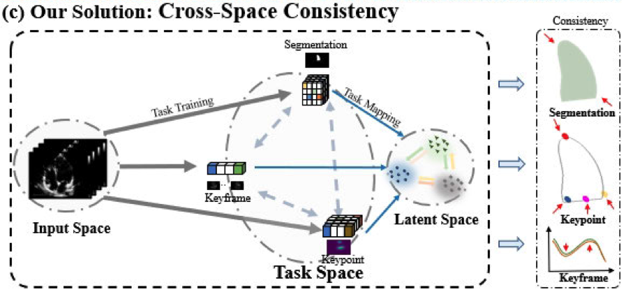
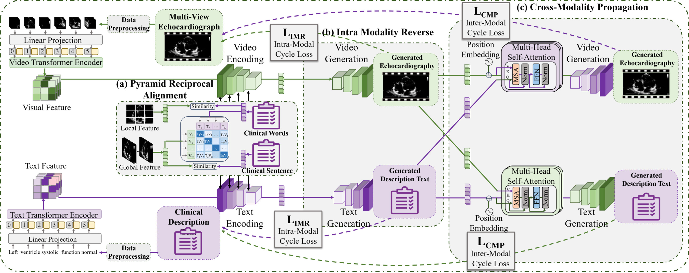
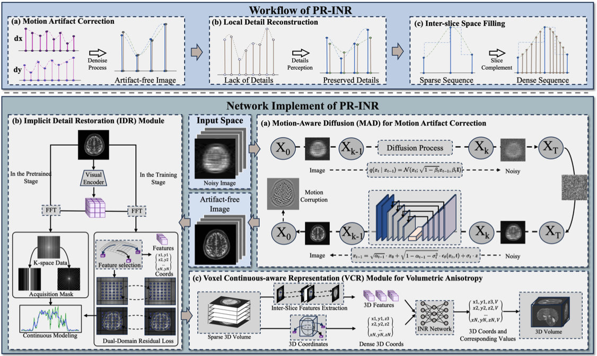
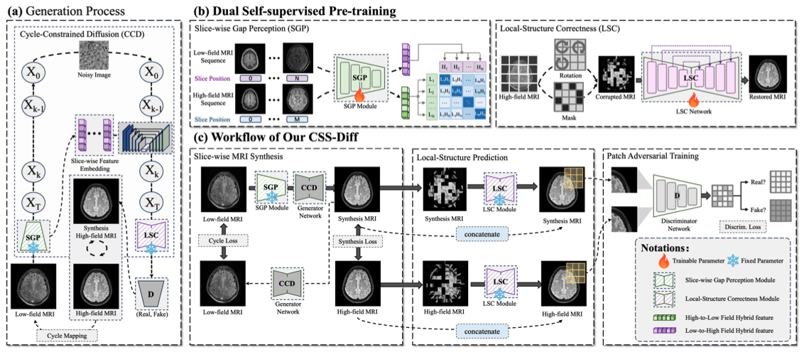
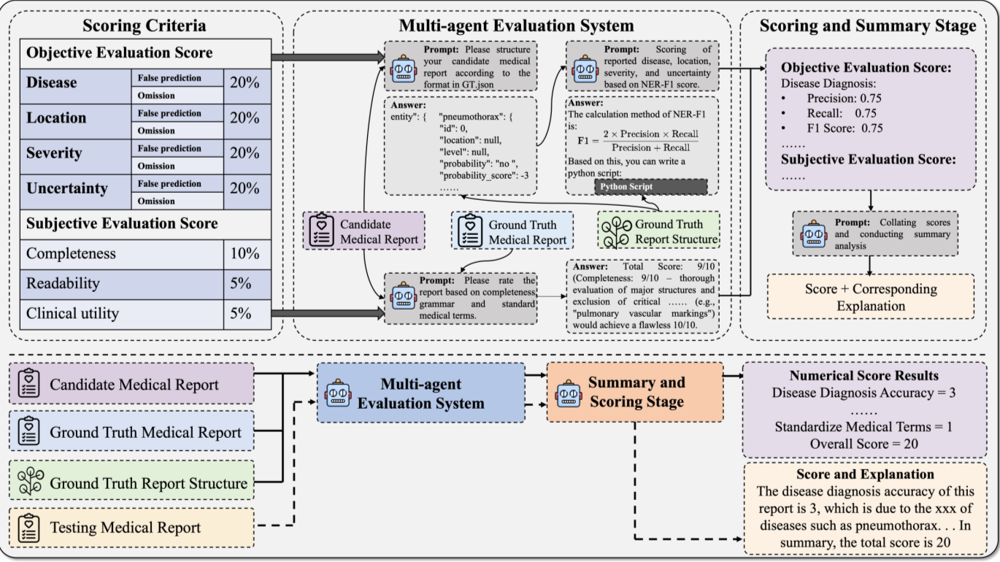
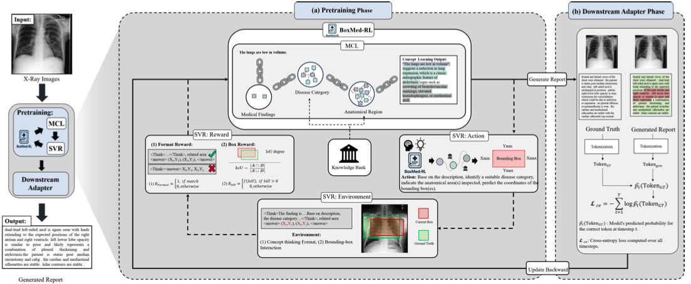
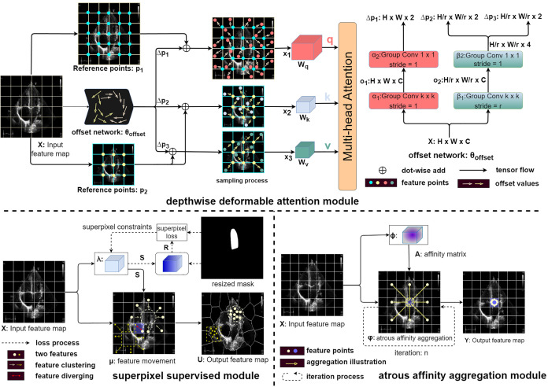
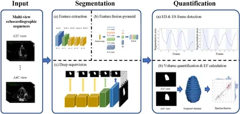
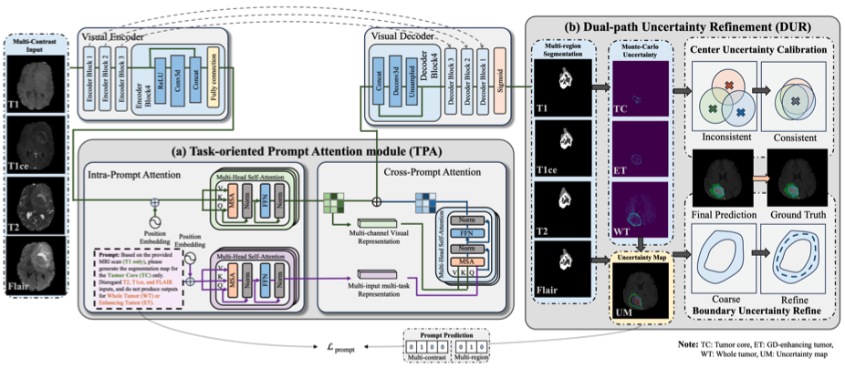
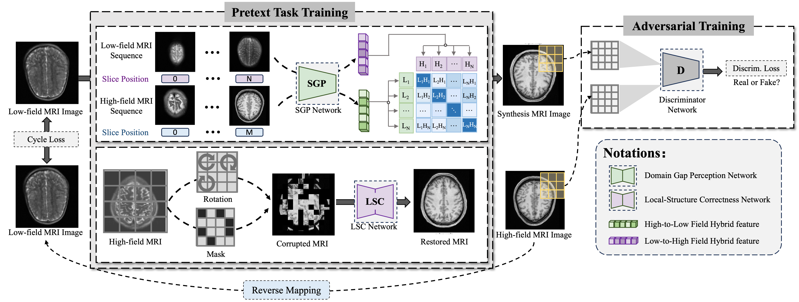

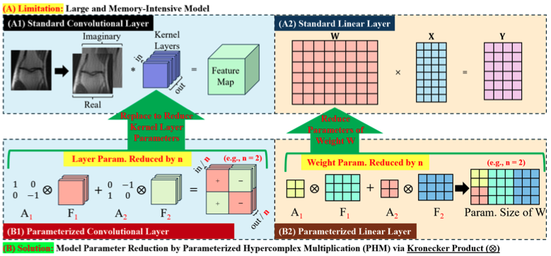

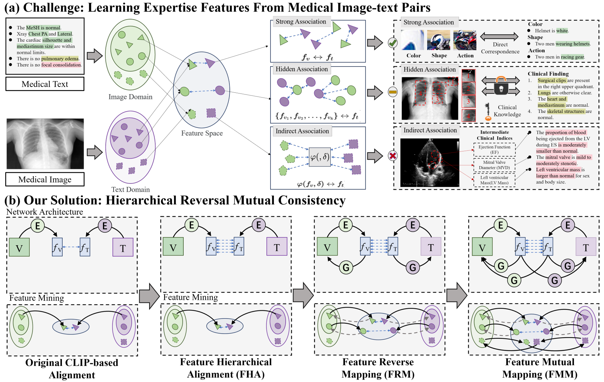
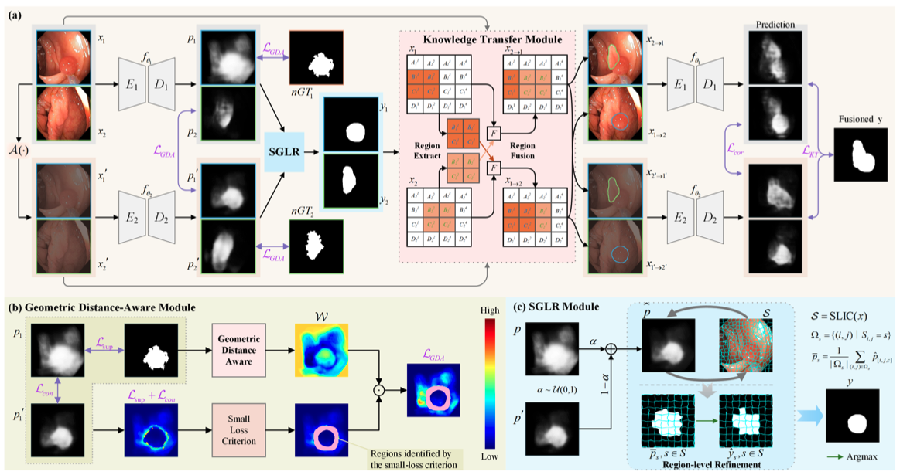
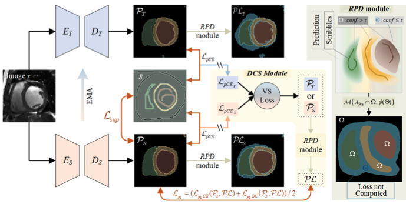


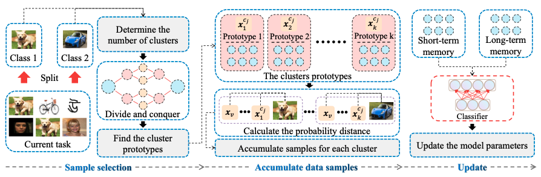


Teaching Experience
Responsible for tutorial preparation, Q&A sessions, and exam paper marking.
Assisted in-class discussions and graded project reports.
Co-supervised a group of 4 MSc students on their final research project.
Co-supervised a group of 5 MSc students on their final research project.
Awards & Grants
Awarded 800,000 GPU hours on Isambard-AI via the DSIT/UKRI AIRR open call for the project "AI-Enhanced MRI Reconstruction and Diagnostic Modeling Across Magnetic Field Strengths" (PI: Prof. Guang Yang; co-PI of the winning proposal). Selected among the strongest proposals in a highly competitive open call.
Technical Skills & Interests
Languages: English, Chinese, Cantonese, Hakka
Programming Languages: Python, C/C++, MATLAB
Deep Learning Frameworks: PyTorch, TensorFlow
Areas of Interest: MRI Reconstruction, Modality Synthesis, Vision-Language Modeling, Agentic AI
Methods: Implicit Neural Representations, Diffusion Models, Large Language Models, Uncertainty-Aware Learning